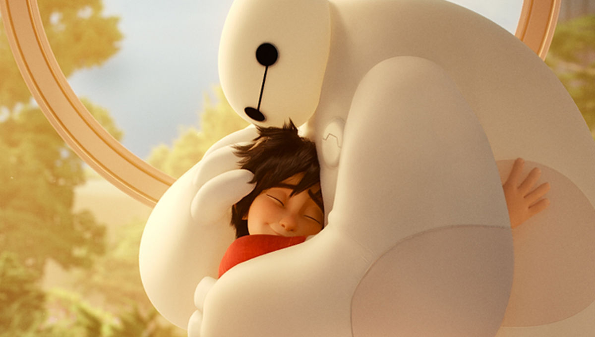

About Baymax
Baymax cares. That's what he was designed to do. The adorable, plus-sized inflatable robot's job title is technically Healthcare Companion: With a simple scan, Baymax can detect vital stats, and, given a patient's level of pain, can treat nearly any ailment. Conceived and built by Tadashi Hamada, Baymax just might revolutionize the healthcare industry. But to the inventor's kid brother Hiro, the nurturing, guileless bot turns out to be more than what he was built for—he's a hero, and quite possibly Hiro's closest friend. And after some deft reprogramming that includes a rocket fist, super strength and rocket thrusters that allow him to fly, Baymax becomes one of the Big Hero 6
Baymax hug Hiro
Baymax's characteristics
- He's selfless
- He's caring and extremely devoted to his patients
- He's willingly go to great lengths to achieve his programmed goal
- He's slightly naïve and childlike
- He's very calm, even in dangerous situations
- He's is somewhat slow in processing things around him that don't involve health
- He's very curious of his surroundings and tends to get easily distracted
This is Baymax and his friends